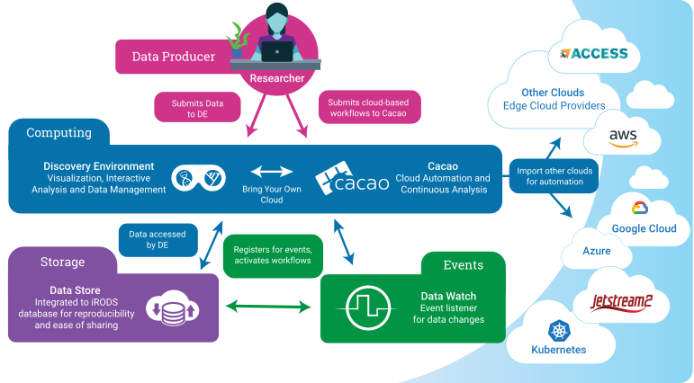
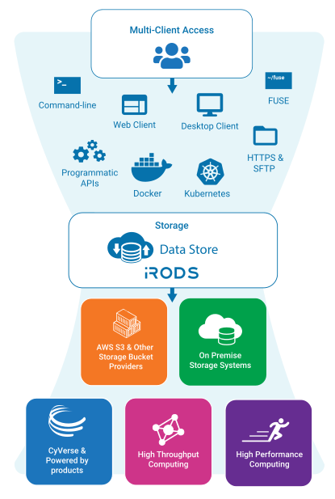

System Overview
CyVerse is both a Software as a Service (SaaS) and the Infrastructure as Code (IaC) necessary to manage a full stack cyberinfrastructure.
The US public CyVerse primarily runs on hardware located at The University of Arizona, with a full data store mirror at the Texas Advanced Computing Center (TACC), and federated compute resources located across the US.
The full CyVerse SaaS stack can be deployed either on-premises consumer hardware or on cloud resources.
Data storage is managed by an iRODS  Data Store.
Data Store.
Computing can be done in either the  Discovery Environment (DE) data science workbench or with the
Discovery Environment (DE) data science workbench or with the  CACAO IaC which leverages both public research computing and commercial cloud.
CACAO IaC which leverages both public research computing and commercial cloud.
Event-based triggers are accomplished through the DataWatch API.

Application Programming Interfaces (APIs)¶
All CyVerse APIs are OpenAPI compliant.
Terrain API is the main API for Discovery Environment and uses a Swagger interface.
- Terrain API Jupyter Notebooks - provide an introduction to Terrain and show how to start and stop analyses.
- https://de.cyverse.org/terrain/swagger.json
 CACAO API - Infrastructure as Code API for cloud automation with OpenAPI
CACAO API - Infrastructure as Code API for cloud automation with OpenAPI
Data Watch API - event based triggers for workflows with OpenAPI
CyVerse public-facing APIs are frequently leveraged by "Powered-by-CyVerse" projects which utilize specific parts of the platform.
Cloud Services¶
 Continous Automation / Continuous Analysis & Orchestration (CACAO) - Infrastructure as Code for multi-cloud deployments
Continous Automation / Continuous Analysis & Orchestration (CACAO) - Infrastructure as Code for multi-cloud deployments
- CACAO Terraform Templates
- DataWatch - a notification system for reporting data events
Compute Resources¶
The DE runs on-premises hardware located at University of Arizona (UArizona) in the UITS colocation space at the high performance computing center. The data store is mirrored nightly at TACC.
CyVerse staff maintain over XXX servers at UArizona and 1 server at TACC.
Hardware is added, replaced, or upgraded every few months. Table values below may not be up-to-date.
Primary Hardware Specifications
Compute Nodes (XXX nodes)
| System Configuration | Aggregate information | Per Node (Compute Node) |
|---|---|---|
| Machine types | Dell, SuperMicro, XXX | |
| Operating Systems | Centos, Rocky | Centos, Rocky |
| Processor cores | XX,XXX | average XX |
| CPUs | 128, 64, 40, 32, 16 | 1, 2 |
| RAM | XXX TiB | 256, 128, 64, 32 GiB |
| Network | 100 Gbps to Internet2 | 10 Gpbs to switch |
| Storage | X PB | X TB |
GPU Nodes (XXX nodes)
| System Configuration | Aggregate information | Per Node (Compute Node) |
|---|---|---|
| Machine types | Dell, SuperMicro, XXX | |
| Operating Systems | Centos, Rocky | Centos, Rocky |
| Processor cores | 256 | |
| CPUs | 2 | |
| RAM | 1 TB, 512 GB | |
| GPUs | NVIDIA (A100 80GB), (Tesla T4 16GB) | 4 |
| Network | 100 Gbps to Internet2 | 10 Gpbs to switch |
| Storage | XXX TB | 28 TB SSD, 21 TB NVMe |
Storage Resource Nodes (44 nodes)
| System Configuration | Aggregate information | Per Node (Compute Node) |
|---|---|---|
| Machine types | Dell, SuperMicro, XXX | |
| Operating Systems | Centos, Ubuntu | Centos, Ubuntu |
| Processor cores | 1506 | average XX |
| CPUs | 128, 64, 40, 32, 16 | 1, 2 |
| RAM | 11 TiB | 256, 128, 64, 32 GiB |
| Network | 100 Gbps to Internet2 | 10 Gpbs to switch |
| Storage | 18 PB | X TB |
Federated Kubernetes Clusters¶
- CyVerse runs mainly on a locally managed K8s cluster, but it can be federated to other K8s clusters.
- The National Research Platform offers federated K8s resources. These resources are currently in development.
OpenStack Cloud¶
- CyVerse maintains its own OpenStack Cloud (formerly "Atmosphere") for internal use and development of CACAO.
- Jetstream2 is primarily operated at Indiana University, but test clusters are shared across other universities in the US

High Throughput Computing Environments:¶
DE uses HTCondor for executable jobs on CyVerse resources and osg jobs on the OpenScienceGrid

Federation to the OpenScienceGrid can be accomplished in the DE
High Performance Computing Environments¶
University of Arizona resources are colocated with the CyVerse data store and compute clusters
CyVerse is partnered with Texas Advanced Computing Center (TACC) where its data store is replicated nightly. US based researchers can request access to HPC via:
Data Storage¶
The CyVerse Data Store manages over 6 PB data via iRODS (integrated Rule Oriented Data System) within the iplant zone. The zone name is related to the original project name. It is retained to preserve access to data through URLs published during the time period of the original project.
Data storage is organized into resources. The main resource is named CyVerseRes, and it holds all user data and most project data. Data on CyVerseRes are stored ath the University of Arizona. This resource is mirrored with a second resource named taccRes which is backed by storage located at the Texas Advanced Computing Center (TACC). There are also special purpose resources dedicated to certain projects. The data in these resources are stored on hardware owned by these projects.

Interfaces¶
 User Portal - a User Portal for creating and managing accounts, requesting and granting access to platforms, and a user management space for individuals and groups and workshops.
User Portal - a User Portal for creating and managing accounts, requesting and granting access to platforms, and a user management space for individuals and groups and workshops.
 Discovery Environment - Custom interactive web based data science workbench
Discovery Environment - Custom interactive web based data science workbench
KeyCloak - federated OAUTH to CyVerse resources, including Google, GitHub, ORCID,& CILogon
 WebDAV - A service that provides secure HTTP/WebDAV access to the Data Store. It provides anonymous access to public data and authenticated access to private and shared data.
WebDAV - A service that provides secure HTTP/WebDAV access to the Data Store. It provides anonymous access to public data and authenticated access to private and shared data.
 SFTP - A service that provides secure FTP access to the Data Store. The service can be accessed through sftp://data.cyverse.org.
SFTP - A service that provides secure FTP access to the Data Store. The service can be accessed through sftp://data.cyverse.org.
 Data Commons - This service provides secure HTTP access to published datasets that are hosted in the CyVerse Data Store. The Data Commons presents any metadata which have been added by the owners to their datasets.
Data Commons - This service provides secure HTTP access to published datasets that are hosted in the CyVerse Data Store. The Data Commons presents any metadata which have been added by the owners to their datasets.
Monitoring Services¶
Health Status - system status monitor
perfSONAR web toolkit - network measurement toolkit